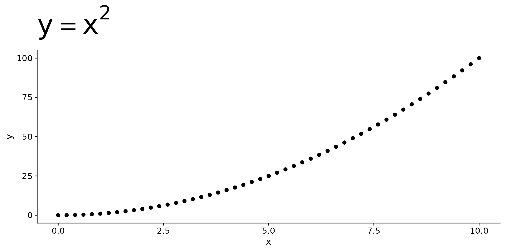
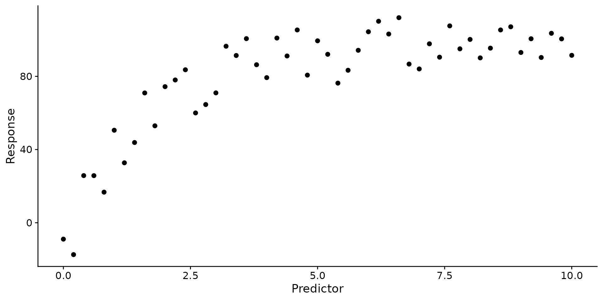
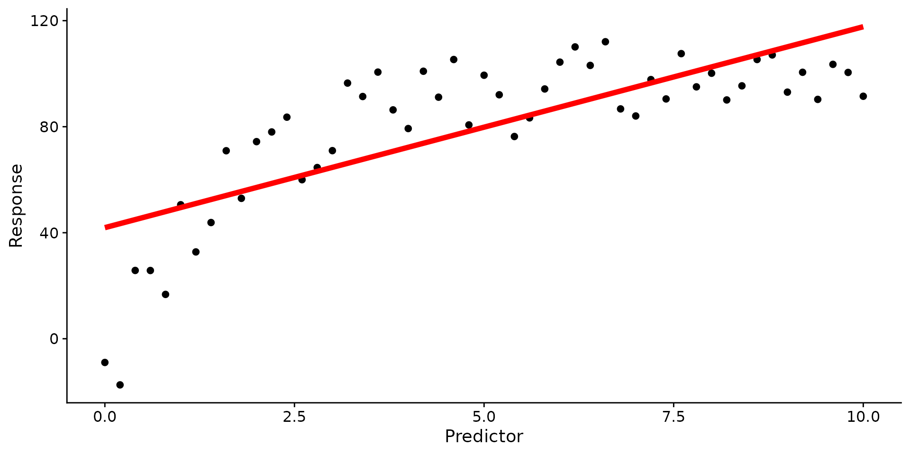
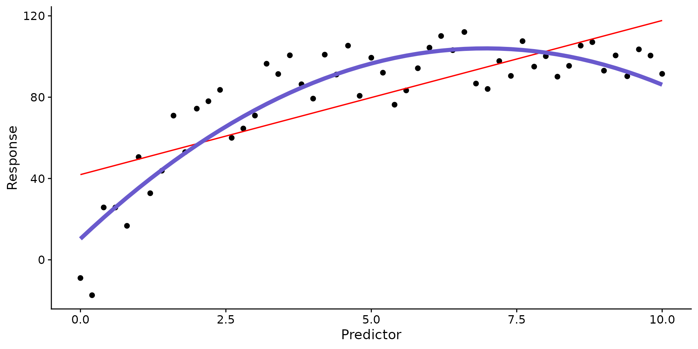
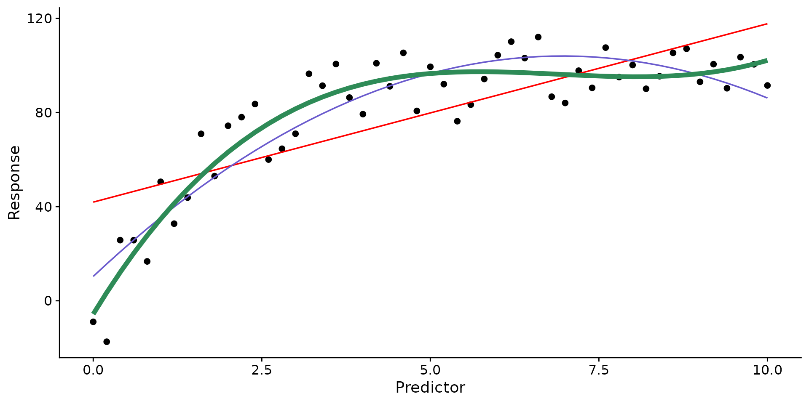
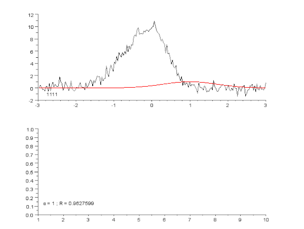
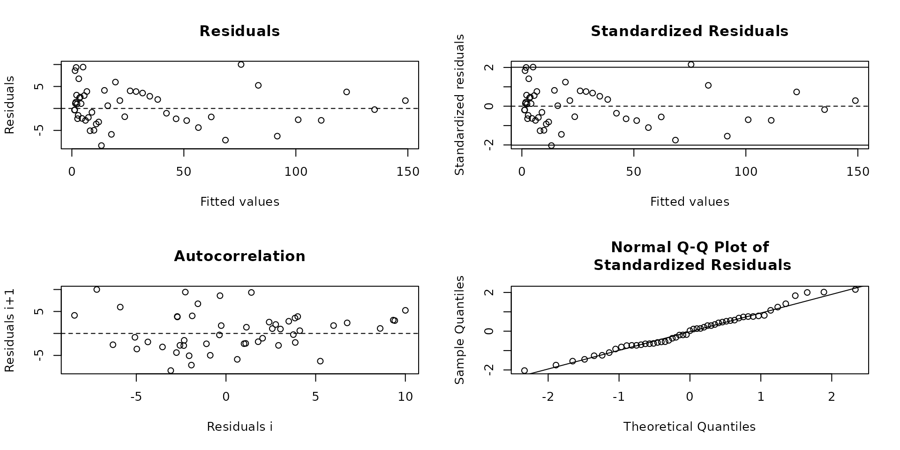
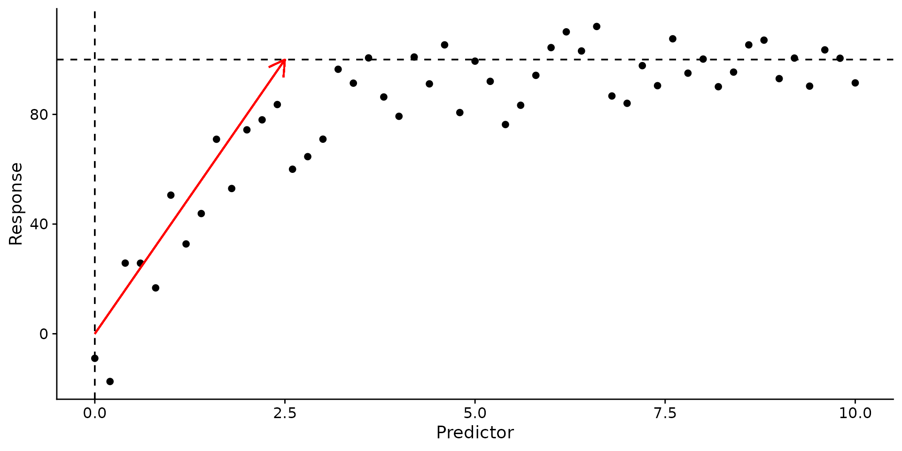
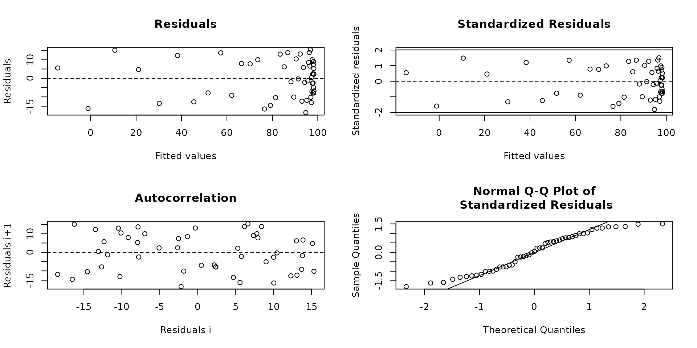
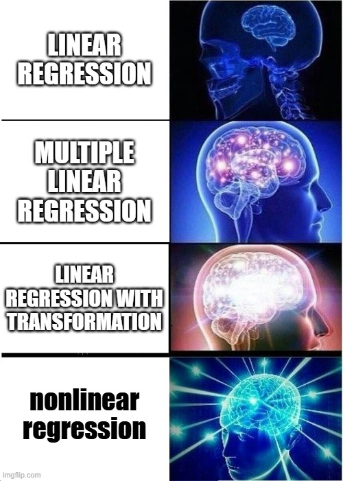

Topic 12 – Nonlinear regression
ENVX1002 Statistics in Life and Environmental Sciences
The University of Sydney
Feb 2026
Module overview
- Week 9. Describing Relationships
- Correlation (calculation, interpretation)
- Regression (model structure, model fitting
- What/when/why/how
- Week 10. Simple Linear Regression
- Can we use the model?(assumptions, hypothesis testing)
- How good is the model?(interpretation, model fit)
- Week 11. Multiple Linear Regression
- Multiple Linear Regression (MLR) modelling
- Assumptions, interpretation and the principle of parsimony
- Week 12. Nonlinear Regression
- Common nonlinear functions
- Transformations
Regressions
Simple linear regression
\[ Y_i = \beta_0 + \beta_1 x_i + \epsilon_i \]
Ideal for predicting a continuous response variable from a single predictor variable: “How does \(y\) change as \(x\) changes, when the relationship is linear?”
Multiple linear regression
\[ Y_i = \beta_0 + \beta_1 x_{1i} + \beta_2 x_{2i} + ... + \beta_k x_{ki} + \epsilon_i \]
“How does \(y\) change as \(x_1\), \(x_2\), …, \(x_k\) change?”
Nonlinear regression
\[ Y_i = f(x_i, \beta) + \epsilon_i \]
where \(f(x_i, \beta)\) is a nonlinear function of the parameters \(\beta\): “How do we model a change in \(y\) with \(x\) when the relationship is nonlinear?”
Nonlinear regression

Carl Friedrich Gauss (1777-1855) and Isaac Newton (1642-1726) Gauss-Newton approach to nonlinear regression is most commonly used
Nonlinear relationships
Linear relationships are simple to interpret since the rate of change is constant.
“As one changes, the other changes at a constant rate.”
Nonlinear relationships often involve exponential, logarithmic, or power functions.
“As one changes, the other changes at a rate that is not proportional to the change in the other.
Dealing with nonlinearity
Transformations
Often, a nonlinear relationship may be transformed into a linear relationship by applying a transformation to the response variable or the predictor variable(s).
- Logarithmic: \(y = \log(x)\)
- Exponential: \(y = e^x\)
- Square-root: \(y = \sqrt{x}\)
- Inverse: \(y = \frac{1}{x}\)
- Usually works when \(y\) changes monotically with \(x\).
- More interpretable and easier to fit.
Nonlinear relationships: exponents
- \(x^2\) is the square of \(x\).
- \(x^3\) is the cube of \(x\).
- \(x^a\) is x raised to the power of \(a\).
In a relationship where \(y\) is a function of \(x^a\), as \(x\) increases, \(y\) increases nonlinearly at a rate that depends on the value of \(x\) and \(a\) (\(\frac{dy}{dx} = ax^{a-1}\)).
Nonlinear relationships: logarithms
- \(log_e(x)\) is the natural logarithm of \(x\).
- \(log_{10}(x)\) is the common logarithm of \(x\).
- \(log_a(x)\) is the logarithm of \(x\) to the base \(a\).
Interpretation:
- If \(\log_a(y) = x\): as \(x\) increases, the value of \(y\) increases by \(y = a^x\).
- If \(y = \log_a(x)\): as \(x\) increases, the value of \(y\) increases by \(y = \log_a(x)\). As \(y\) increases, the value of \(x\) increases by \(x = a^y\).
Exponents and logarithms
| Exponents | Logarithms | |
|---|---|---|
| Definition | If \(a^n = b\), \(a\) is the base, \(n\) is the exponent, and \(b\) is the result. | If \(\log_a b = n\), \(a\) is the base, \(b\) is the result, and \(n\) is the logarithm (or the exponent in the equivalent exponential form). |
| Example | \(2^3 = 8\) | \(\log_2 8 = 3\) |
| Interpretation | \(2\) raised to the power of \(3\) equals \(8\). | The power to which you must raise \(2\) to get \(8\) is \(3\). |
| Inverse | The logarithm is the inverse operation of exponentiation. | The exponentiation is the inverse operation of logarithm. |
| Properties | \((a^n)^m = a^{n \cdot m}\), \(a^n \cdot a^m = a^{n+m}\), \(\frac{a^n}{a^m} = a^{n-m}\) | \(\log_a(b \cdot c) = \log_a b + \log_a c\), \(\log_a\left(\frac{b}{c}\right) = \log_a b - \log_a c\), \(\log_a(b^n) = n \cdot \log_a b\) |
Note
For your understanding, not examinable.
Common nonlinear functions
\(f(x_i, \beta)\)
Exponential decay relationship
Response variable decreases and approaches limit as predictor variable increases.
\[ y = a \cdot e^{-bx} \]
Examples: radioactive decay, population decline, chemical reactions.
Asymptotic relationship
Response variable increases and approaches a limit as the predictor variable increases.
\[ y = a + b(1 - e^{-cx}) \]
Code

Examples: population growth, enzyme kinetics.
Logistic relationship
An S-shaped relationship, where the response variable is at first exponential, then asymptotic.
\[ y = c + \frac{d-c}{1+e^{-b(x-a)}} \]
Code
set.seed(450)
# Simulate data:
logistic <- tibble(predictor = seq(0, 10, by = 0.2),
response = 10 + abs(300 * (1 / (1 + exp(-0.8 * (predictor - 5)))) + rnorm(length(predictor), mean = 0, sd = 10)))
ggplot(data = logistic, aes(x = predictor, y = response)) +
geom_point() +
labs(x = "Predictor", y = "Response")Examples: growth of bacteria, disease spread, species growth.
Polynomial relationship
Response variable changes in a variety of ways as the predictor variable changes. Also known as ‘curvilinear’.
\[ y = a + bx + cx^2 + dx^3 + ... \]
Code
# Set seed for reproducibility
set.seed(529)
# Simulate data:
curvilinear <- tibble(predictor = seq(0, 30, length.out = 50),
response = 50 * (1 - (predictor - 15)^2 / 225) + rnorm(length(predictor), mean = 0, sd = 5))
ggplot(data = curvilinear, aes(x = predictor, y = response)) +
geom_point() +
labs(x = "Predictor", y = "Response")
Examples: food intake, drug dosage, exercise.
Transformations
How far can we go?
Transformations: exponential decay
Transformations: exponential decay
Transformations: asymptotic relationship

Transformations: asymptotic relationship

Transformations: logistic relationship
Transformations: logistic relationship
Transformations: polynomial relationship
Transformations: polynomial relationship
Did the transformations work?
- To a certain extent…
- Problems:
- Relationships typically do not meet the linear assumption, but seem “ok” for other assumptions.
- Poor fit to the data (over or underfitting in some areas).
- Difficult to interpret the results.
Nonlinear regression
- A way to model complex (nonlinear) relationships.
- i.e. phenomena that arise in the natural and physical sciences e.g. biology, chemistry, physics, engineering.
- At least one predictor is not linearly related to the response variable.
- Unique/specific shape - apply only if you are sure of the relationship, e.g. asymptotic, quadratic.
Performing nonlinear regression
- Polynomial regression: still linear in the parameters and a good place to start.
- Nonlinear regression: use the
nls()function to fit the following nonlinear models:- Exponential growth
- Exponential decay
- Logistic
Polynomial regression
A special case of multiple linear regression used to model nonlinear relationships.
Model
\[ Y_i = \beta_0 + \beta_1 x_i + \beta_2 x_i^2 + ... + \beta_k x_i^k + \epsilon_i \]
where \(k\) is the degree of the polynomial.
- The model is still linear in the parameters \(\beta\) and can be fitted using least squares.
- Instead of multiple predictors, we have multiple terms of the same predictor (same \(x\)).
- Only the highest-order term is tested for significance.
- Can still be fit using
lm(). - The more complex, the less likely it follows a true biological relationship…
Adding polynomial terms
- Linear: \(y = \beta_0 + \beta_1 x\)
- Quadratic: \(y = \beta_0 + \beta_1 x + \beta_2 x^2\)
- Cubic: \(y = \beta_0 + \beta_1 x + \beta_2 x^2 + \beta_3 x^3\)
- Each level increases the power of the predictor by 1.
Polynomial fitting
Using the asymptotic data
The data
See Slide 11 for the relationship and mathematical expression.
Fitting the model (linear)
\[ Y_i = \beta_0 + \beta_1 x_i + \epsilon_i \]
Fitting the model (poly(degree = 2))
\[ Y_i = \beta_0 + \beta_1 x_i + \beta_2 x_i^2 + \epsilon_i \]
Fitting the model (poly(degree = 3))
\[ Y_i = \beta_0 + \beta_1 x_i + \beta_2 x_i^2 + \beta_3 x_i^3 + \epsilon_i \]
Fitting the model (poly(degree = 10))
\[ Y_i = \beta_0 + \beta_1 x_i + \beta_2 x_i^2 + ... + \beta_10 x_i^{10} + \epsilon_i \]
| Model | R2 |
|---|---|
| Linear | 0.570 |
| Poly2 | 0.820 |
| Poly3 | 0.872 |
| Poly10 | 0.862 |
Note
We use adjusted R2 for polynomials - extra terms, extra complexity, so extra penalty.
Limitations
- Meaning of the coefficients is not always clear.
- Extrapolation can be dangerous.
- Extra terms can lead to overfitting and are difficult to interpret:
- Parsimony: is the most complex term (highest power) significant? If not, use a lower power.
Call:
lm(formula = response ~ poly(predictor, 10), data = asymptotic)
Residuals:
Min 1Q Median 3Q Max
-17.1659 -8.6908 -0.0494 8.8003 16.4012
Coefficients:
Estimate Std. Error t value Pr(>|t|)
(Intercept) 79.818 1.552 51.426 < 2e-16 ***
poly(predictor, 10)1 159.368 11.084 14.378 < 2e-16 ***
poly(predictor, 10)2 -106.939 11.084 -9.648 5.37e-12 ***
poly(predictor, 10)3 48.570 11.084 4.382 8.28e-05 ***
poly(predictor, 10)4 -19.411 11.084 -1.751 0.0876 .
poly(predictor, 10)5 1.193 11.084 0.108 0.9148
poly(predictor, 10)6 -2.769 11.084 -0.250 0.8040
poly(predictor, 10)7 -1.343 11.084 -0.121 0.9042
poly(predictor, 10)8 -4.009 11.084 -0.362 0.7195
poly(predictor, 10)9 -2.851 11.084 -0.257 0.7984
poly(predictor, 10)10 5.769 11.084 0.520 0.6056
---
Signif. codes: 0 '***' 0.001 '**' 0.01 '*' 0.05 '.' 0.1 ' ' 1
Residual standard error: 11.08 on 40 degrees of freedom
Multiple R-squared: 0.8897, Adjusted R-squared: 0.8621
F-statistic: 32.26 on 10 and 40 DF, p-value: 4.846e-16Still:
- Easy to fit: just add polynomial terms to the model.
- Simple to perform: use
lm().
Nonlinear fitting
Fitting a nonlinear model
If you have some understanding of the underlying relationship (e.g. mechanistic process) between the variables, you can fit a nonlinear model.
Mathematical expression
\[ Y_i = f(x_i, \beta) + \epsilon_i \]
where \(f(x_i, \beta)\) is a nonlinear function of the parameters \(\beta\).
- \(Y_i\) is the continuous response variable.
- \(x_i\) is the vector of predictor variables.
- \(\beta\) is the vector of unknown parameters.
- \(\epsilon_i\) is the random error term (residual error).
Assumptions
Like the linear model, the nonlinear model assumes INE:
- Error terms are independent (Independence).
- Error terms are normally distributed (Normality).
- Error terms have equal/constant variance (Homoscedasticity).
Basically:
\[ \epsilon_i \sim N(0, \sigma^2) \]
Like all other models we have seen, we focus on the residuals to assess the model fit, since the residuals are the only part of the model that is random.
Estimating the model parameters
- The parameters are estimated using the method of least squares.
- For nonlinear models, a nonlinear optimization algorithm is used to find the best fit, rather than ordinary least squares:
- This can only be performed iteratively and depends on a “best guess” of the parameters as a start.
- i.e. we need to provide a starting point for a nonlinear least squares algorithm to begin.

Source: Wikipedia
Two methods in R
Use nls() function in R.
formula: a formula object, response variable ~ predictor variable(s).data: a data frame containing the variables in the model (response, predictor).start: a named list of starting values for the parameters in the model.
Self-starting functions: SSexpf(), SSasymp(), SSlogis(), etc.
- Self-starting functions estimate the starting values for you.
- Named after the models they fit.
- Existing functions have pre-set formulas.
- Can define own functions but more complex than
nls().
Example: Fitting an exponential model
With nls()
\(y=y_0e^{kx}\)
where
- \(y\) is the response and \(x\) is the predictor
- \(y_0\) is the value of \(y\) when \(x = 0\)
- \(k\) is the rate of change
\(k\) can be estimated with the equation \(slope = k = \frac{log_e y_{max} - log_e y_{min}}{x_{max} - x_{min}}\), but usually a value of 1 is a good starting point.
Code
set.seed(123)
growth <- tibble(
predictor = seq(0,10, by = 0.2),
response = abs(exp(0.5*predictor) + rnorm(length(predictor), mean = 1, sd = 5)))
ggplot(data = growth, aes(x = predictor, y = response)) +
geom_point() +
geom_hline(yintercept = 0, linetype = "dashed") +
labs(x = "Predictor", y = "Response")First guess
Based on the plot, we can estimate \(y_0 ~ 0\) and \(k = 1\). Because of the equation, \(y=y_0e^{kx}\), \(y_0\) cannot be 0!

Check assumptions
- These plots determine if the residuals are normally distributed and have equal variance
- Normal QQ looks good
- Residuals vs fitted and Standardized Residuals even spread but slight fanning.
- With Autocorrelation we want random scatter around 0 – this indicates independence. Harder to meet with time-series data.
- Nonlinear models typically should meet assumptions because they are fitted specifically to the data.
Interpretation
Formula: response ~ y0 * exp(k * predictor)
Parameters:
Estimate Std. Error t value Pr(>|t|)
y0 1.1694 0.1291 9.059 4.82e-12 ***
k 0.4847 0.0121 40.057 < 2e-16 ***
---
Signif. codes: 0 '***' 0.001 '**' 0.01 '*' 0.05 '.' 0.1 ' ' 1
Residual standard error: 4.409 on 49 degrees of freedom
Number of iterations to convergence: 8
Achieved convergence tolerance: 1.192e-06- The model is significant since the p-value is less than 0.05 for all parameters.
- If this were real data (e.g. population growth), the parameters themselves e.g. rate of change, are useful
- The parameterised model is:
\[ y = 1.17 \cdot e^{-0.484x} \] The R-squared value is not reported for nonlinear models as the sum of squares is not partitioned into explained and unexplained components. You can use the residual standard error and plots instead to compare between models.
A really bad guess
What if we don’t estimate our parameters very well? R will either give an error or get there eventually.
Note the parameters and residual standard error are the same as the previous slide - but the Number of iterations to convergence is higher.
Code
Formula: response ~ y0 * exp(k * predictor)
Parameters:
Estimate Std. Error t value Pr(>|t|)
y0 1.1694 0.1291 9.059 4.82e-12 ***
k 0.4847 0.0121 40.057 < 2e-16 ***
---
Signif. codes: 0 '***' 0.001 '**' 0.01 '*' 0.05 '.' 0.1 ' ' 1
Residual standard error: 4.409 on 49 degrees of freedom
Number of iterations to convergence: 28
Achieved convergence tolerance: 2.003e-06Tip
If an error pops up, try different starting values - the rate of change is most likely the problem.
Fitting the model with SSexpf()
SSexpf()is from thenlraapackage.- It has the same formula as above – different names for parameters (\(y_0\) = \(a\), \(k\) = \(c\)) but we can re-define them to anything we want
- Reaches the same result but with less effort.
Code
Formula: response ~ SSexpf(predictor, y0, k)
Parameters:
Estimate Std. Error t value Pr(>|t|)
y0 1.65486 0.04699 35.22 < 2e-16 ***
k -0.06527 0.00590 -11.06 6.33e-15 ***
---
Signif. codes: 0 '***' 0.001 '**' 0.01 '*' 0.05 '.' 0.1 ' ' 1
Residual standard error: 0.1471 on 49 degrees of freedom
Number of iterations to convergence: 5
Achieved convergence tolerance: 1.048e-06Example: Fitting an asymptotic model
The equation
- There are multiple equations for asymptotic models, this is the equation that
SSasymp()(base R) uses:
\[ y = Asym + (R_0-Asym) \cdot e^{-e^{lrc} \cdot x} \]
- \(R_0\) is value of \(y\) when \(x = 0\).
- \(Asym\) is the upper limit: the maximum value of \(y\).
- \(lrc\) is the rate of change: the rate at which \(y\) approaches the upper limit.
Code
ggplot(data = asymptotic, aes(x = predictor, y = response)) +
geom_point() +
geom_hline(yintercept = 100, linetype = "dashed") +
geom_vline(xintercept = 0, linetype = "dashed") +
## plot the rate
geom_segment(aes(x = 0, y = 0, xend = 2.5, yend = 100),
arrow = arrow(length = unit(0.5, "cm")),
color = "red") +
labs(x = "Predictor", y = "Response")
Some plausible estimates – \(R_0 = 0\), \(Asym = 100\), \(lrc = 0.8\).
Fit model
Check assumptions
Interpretation
Formula: response ~ SSasymp(predictor, Asym, R0, lrc)
Parameters:
Estimate Std. Error t value Pr(>|t|)
Asym 98.5204 2.2852 43.113 < 2e-16 ***
R0 -14.5176 6.6416 -2.186 0.03374 *
lrc -0.4626 0.1134 -4.079 0.00017 ***
---
Signif. codes: 0 '***' 0.001 '**' 0.01 '*' 0.05 '.' 0.1 ' ' 1
Residual standard error: 10.21 on 48 degrees of freedom
Number of iterations to convergence: 0
Achieved convergence tolerance: 3.341e-07- The model is significant since the p-value is less than 0.05 for all parameters.
- If this were real data (e.g. population growth), the parameters themselves e.g. rate of change, are useful
- The parameterised model is:
\[ y = 98.5 + (-14.5-98.5) \cdot e^{-e^{-0.463} \cdot x} \] # Example: fitting a logistic model
The equation
There are multiple equations for logistic models, but they all have an ‘S’ or sigmoid shape. The equation that SSlogis() (base R) assumes \(y\) is positive and uses:
\[ y = \frac{Asym}{1+e^{\frac{xmid-x}{scal}}} \] where
- \(Asym\) is the upper limit: the maximum value of \(y\).
- \(xmid\) is the value of \(x\) when \(y\) is halfway between the lower and upper limits.
- \(scal\) is the rate of change: the rate at which \(y\) approaches the upper limit.
Code
ggplot(data = logistic, aes(x = predictor, y = response)) +
geom_point() +
labs(x = "Predictor", y = "Response") +
geom_hline(yintercept = 300, linetype = "dashed") +
geom_vline(xintercept = 5, linetype = "dashed") +
# label the lines above
annotate("text", x = 0, y = 300, label = "Asym", size = 8, vjust = 1.5) +
annotate("text", x = 5, y = 100, label = "xmid", size = 8, hjust = -1) +
## plot the rate
geom_segment(aes(x = 2.5, y = 60, xend = 6, yend = 250),
arrow = arrow(length = unit(0.5, "cm")),
color = "red") +
# label the rate
annotate("text", x = 4, y = 180, label = "scal", size = 8, colour = "red", hjust = -1)Some starting values would be \(Asym = 300\), \(xmid = 5\), \(scal = 1\).
Fit model
Estimating the parameters or using the self-starting function SSlogis() gives a near-identical result.
Interpretation
SSlogis() guessed the parameters on the first try.
Formula: response ~ SSlogis(predictor, Asym, xmid, scal)
Parameters:
Estimate Std. Error t value Pr(>|t|)
Asym 310.64727 4.62579 67.16 <2e-16 ***
xmid 4.92715 0.07142 68.99 <2e-16 ***
scal 1.34877 0.05418 24.90 <2e-16 ***
---
Signif. codes: 0 '***' 0.001 '**' 0.01 '*' 0.05 '.' 0.1 ' ' 1
Residual standard error: 10.22 on 48 degrees of freedom
Number of iterations to convergence: 1
Achieved convergence tolerance: 6.632e-07- The model is significant since the p-value is less than 0.05 for all parameters.
- If the model visually fits well and relationship has reasoning (parameter significance not always important).
- The parameterised model is:
\[ y = \frac{310}{1+e^{\frac{4.93-x}{1.35}}} \]
How do we know which model is better? (Advanced)
Note: this is non-examinable content but might be useful for your project.
Example: polynomial regression
Code
library(tidyr)
# Create a new data frame with predictor values and model predictions
predictions <- data.frame(
predictor = asymptotic$predictor,
Linear = predict(lin_fit),
Poly_2 = predict(poly2_fit),
Poly_3 = predict(poly3_fit),
Poly_10 = predict(poly10_fit)
)
# Reshape the data to long format
predictions_long <- predictions %>%
pivot_longer(cols = -predictor, names_to = "Model", values_to = "response")
# Plot the data
ggplot(predictions_long, aes(x = predictor, y = response, color = Model)) +
geom_point(data = asymptotic, aes(x = predictor, y = response), inherit.aes = FALSE) +
geom_line(linewidth = 1) +
labs(x = "Predictor", y = "Response") +
scale_color_brewer(palette = "Spectral") Prediction quality
We can use prediction quality metrics to compare the fits.
- Akaike information criterion (AIC) and Bayesian information criterion (BIC).
- Useful for comparing model fits.
- Has a penalty for more predictors
- Residual standard error, residual sum of squares (
deviance(mod)), root mean squared error (RMSE) and mean absolute error (MAE).- Essentially the difference between observed and predicted (residuals).
- RMSE penalises larger residuals.
AIC and BIC
Use the broom package to extract the AIC and BIC values from the model fits.
Code
# A tibble: 4 × 3
model AIC BIC
<chr> <dbl> <dbl>
1 linear 453. 459.
2 poly2 409. 416.
3 poly3 392. 402.
4 poly10 402. 425.- The smaller the AIC or BIC, the better the fit compared to other models.
Calculate RMSE and MAE
Code
predictions <- data.frame(
observed = asymptotic$response,
Linear = predict(lin_fit),
Poly_2 = predict(poly2_fit),
Poly_3 = predict(poly3_fit),
Poly_10 = predict(poly10_fit)
)
errors <- predictions %>%
pivot_longer(cols = -observed, names_to = "Model", values_to = "Predicted") %>%
group_by(Model) %>%
summarise(
RMSE = sqrt(mean((observed - Predicted)^2)),
MAE = mean(abs(observed - Predicted))
)
knitr::kable(errors, digits=2, caption = "Comparison of RMSE and MAE for different models")| Model | RMSE | MAE |
|---|---|---|
| Linear | 19.38 | 15.17 |
| Poly_10 | 9.82 | 8.57 |
| Poly_2 | 12.30 | 9.88 |
| Poly_3 | 10.25 | 8.83 |
- From the results, the polynomial to the degree of 10 has the lowest error - but visually we know it is overfitting, and the cubic polynomial is more parsimonius.
- We can say the model has a prediction error of 10.25 units (RMSE) and 8.83 units (MAE).
Note
Both the RMSE and MAE measure error on the same scale as the response variable. e.g. if the response variable is in kg, the error will be in kg.
Summary
- With nonlinear relationships, there are three possible approaches:
- Linearise the relationship by transforming:
- Fit: easy
- Interpret: difficult
- Add polynomial terms:
- Fit: easy
- Interpret: difficult
- Fit the model using a nonlinear algorithm:
- Fit: difficult
- Interpret: easy
- Linearise the relationship by transforming:

- Nonlinear models:
- Useful for modelling more complex relationships. Require some understanding of the underlying relationship and equations.
- Mainly for prediction rather than interpreting relationships.
- Self-starting functions have limited pre-defined formulas.
- Assumptions INE.
Thanks!
This presentation is based on the SOLES Quarto reveal.js template and is licensed under a Creative Commons Attribution 4.0 International License.